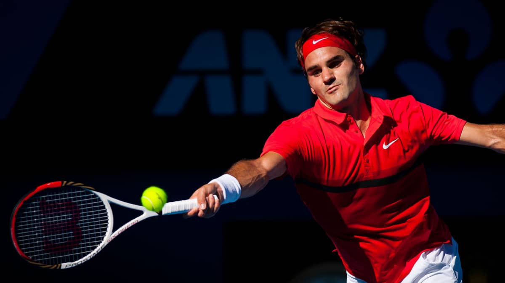

The Best Superhero- Ladybug
October 2, 2023 by Abishua Johnson

Ladybug is the best superhero because she embodies the perfect blend of courage, kindness, and quick thinking. With her miraculous powers, she not only saves Paris but also teaches valuable life lessons about teamwork and resilience.
Ladybug's appeal as the best superhero extends beyond her crime-fighting skills. Her dual identity as Marinette adds depth to her character, making her relatable to audiences of all ages. Her unwavering dedication to protecting the city and her unwavering belief in the power of love make her a truly inspirational role model.
The Best Tennis Player- Roger Federer
October 2, 2023 by Abishua Johnson

Roger Federer is the best tennis player to ever hit a ball over the net. With 20 grand slam titles, Roger Federer has proven that his game is unmatched. With a backhand of perfection, forehand of incredible speed and a serve so fast you can only watch it fly past you; Roger Federer has won the hearts of millions.
Although Roger has a myriad of titles, it is his game that makes him so popular. He is one of the few tennis players to have competed for the love of the sport. The day Roger Federer retired, was a loss to the tennis community. Now we can only reminisce about the superb quality of his tennis.